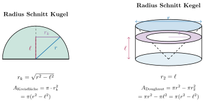
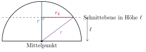

Aufgabe 7.9
Führen Sie den Beweis zu Ende, indem Sie zeigen das die beiden Querschnitte auf einer beliebigen Höhe $h$ identisch sind.
- Berechnen Sie die Querschnittsfläche der Halbkugel in Höhe h
- Berechnen Sie die Querschnittsfläche von Zylinder minus Kegel
- Zeigen Sie, dass beide Flächen gleich sind
- Nutzen Sie den Satz des Pythagoras
Beweis der Volumengleichheit durch das Cavalieri-Prinzip:
Zu zeigen: Die Querschnittsflächen von Halbkugel und (Zylinder - Kegel) sind in jeder Höhe $h$ gleich.

$$\boxed{A_{\text{Kreisfläche}} = A_{\text{Doughnut}} = \pi(r^2 - \ell^2)}$$
Detaillierter mathematischer Beweis:
Schritt 1: Querschnitt der Halbkugel in Höhe $\ell$
Wir betrachten einen horizontalen Schnitt durch die Halbkugel in Höhe $\ell$ über dem Äquator.

Der Querschnitt ist ein Kreis mit Radius $r_k$ (der «Kreisradius in Höhe $\ell$»).
Nach dem Satz des Pythagoras im rechtwinkligen Dreieck: $$r^2 = \ell^2 + r_k^2$$
Auflösen nach $r_k^2$: $$r_k^2 = r^2 - \ell^2$$
Die Querschnittsfläche der Halbkugel ist: $$A_{\text{Halbkugel}}(\ell) = \pi r_k^2 = \pi(r^2 - \ell^2)$$
Schritt 2: Querschnitt von (Zylinder - Kegel) in Höhe $\ell$
Wir betrachten einen Zylinder mit Radius $r$ und einen darin einbeschriebenen Kegel mit Spitze unten und Radius $r$ oben.
a) Querschnitt des Zylinders:
Der Zylinder hat in jeder Höhe einen Kreis mit Radius $r$: $$A_{\text{Zylinder}}(\ell) = \pi r^2$$
b) Querschnitt des Kegels:
Der Kegel hat seine Spitze bei $\ell = 0$ und wächst linear bis zum Radius $r$ bei Höhe $\ell = r$.
In Höhe $\ell$ hat der Kegel den Radius $\ell$ (durch ähnliche Dreiecke oder lineare Beziehung): $$r_{\text{Kegel}}(\ell) = \ell$$
Die Querschnittsfläche des Kegels ist: $$A_{\text{Kegel}}(\ell) = \pi \ell^2$$
c) Differenz (der «Doughnut»):
$$A_{\text{Diff}}(\ell) = A_{\text{Zylinder}}(\ell) - A_{\text{Kegel}}(\ell) = \pi r^2 - \pi \ell^2 = \pi(r^2 - \ell^2)$$
Schritt 3: Vergleich der Querschnittsflächen
$$A_{\text{Halbkugel}}(\ell) = \pi(r^2 - \ell^2) = A_{\text{Diff}}(\ell)$$
Die Querschnittsflächen stimmen in jeder Höhe $\ell$ überein!
Schlussfolgerung durch Cavalieri-Prinzip:
Da die Querschnittsflächen in jeder Höhe $\ell$ (für $0 \leq \ell \leq r$) gleich sind, haben nach dem Cavalieri-Prinzip beide Körper dasselbe Volumen:
$$V_{\text{Halbkugel}} = V_{\text{Zylinder}} - V_{\text{Kegel}}$$
Mit $V_{\text{Zylinder}} = \pi r^2 \cdot r = \pi r^3$ und $V_{\text{Kegel}} = \frac{1}{3}\pi r^2 \cdot r = \frac{1}{3}\pi r^3$:
$$V_{\text{Halbkugel}} = \pi r^3 - \frac{1}{3}\pi r^3 = \frac{2}{3}\pi r^3$$
Für die ganze Kugel: $$\boxed{V_{\text{Kugel}} = 2 \cdot V_{\text{Halbkugel}} = \frac{4}{3}\pi r^3}$$
Wichtige Erkenntnis:
Das Cavalieri-Prinzip ist ein mächtiges Werkzeug: